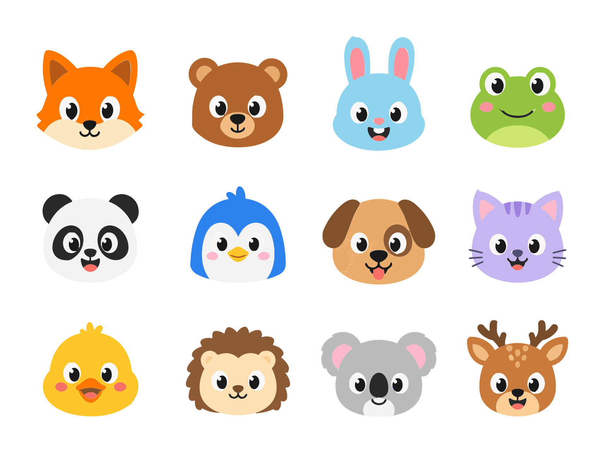

An AI tutor for kids in grades K–6. Snap a photo of any worksheet and KIBO turns it into fun, personalized practice.
Calm, colorful, and built around real classroom skills — so a few minutes a day actually add up.
Take a photo of a worksheet and KIBO instantly creates similar practice at your child's level — so they learn the skill, not just the answer.
Day by day through Math, Reading, Science and Social Studies — bite-sized questions with friendly explanations and visuals.
F.A.S.T.-style practice tests build test-day confidence, aligned to grade-level standards.
Full support in English, Spanish, French and German — a bridge for kids still learning English.
Daily goals, streaks and a cast of encouraging characters make practice something kids want to come back to.
No ads, no chat, no links out. Progress stays on the device. Designed for focus, not for screen time.
Point the camera at any worksheet or homework page.
It builds fun questions at the right level, with hints and visuals.
Short sessions, streaks and progress your child can see.
My daughter used to cry over math homework. Now she asks to practice after dinner.
Every new family gets full KIBO Pro for 15 days — no credit card required. After that, keep a free amount of daily practice, or go Pro.
Auto-renews · Cancel anytime in Settings
Up to three kids, four languages, and a calm experience with nothing to worry about.

KIBO adapts grade names, subjects and standards to where your child goes to school. We detect your country automatically — pick another below to compare.
KIBO's practice is aligned to and modeled on these frameworks; it is an independent study aid, not affiliated with or endorsed by any ministry, department of education or exam board.
Everything about progress, privacy, curriculum and pricing — in one place.